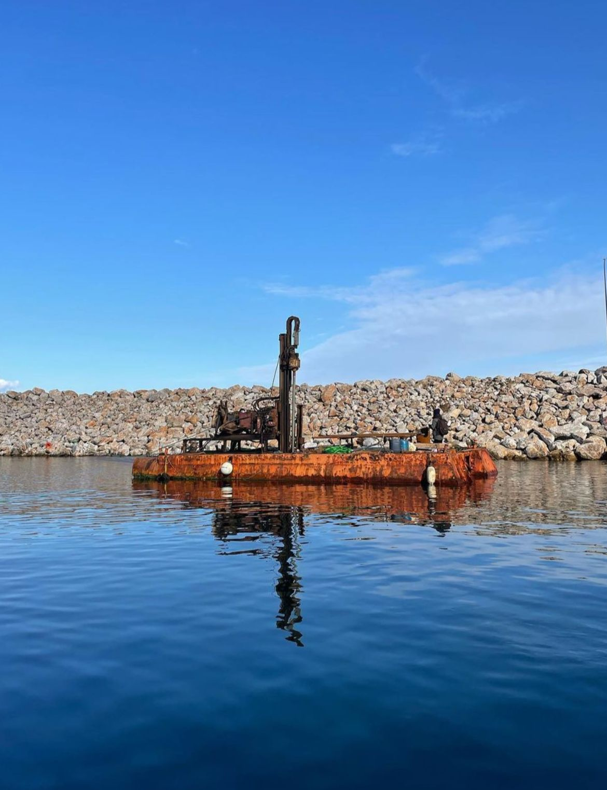
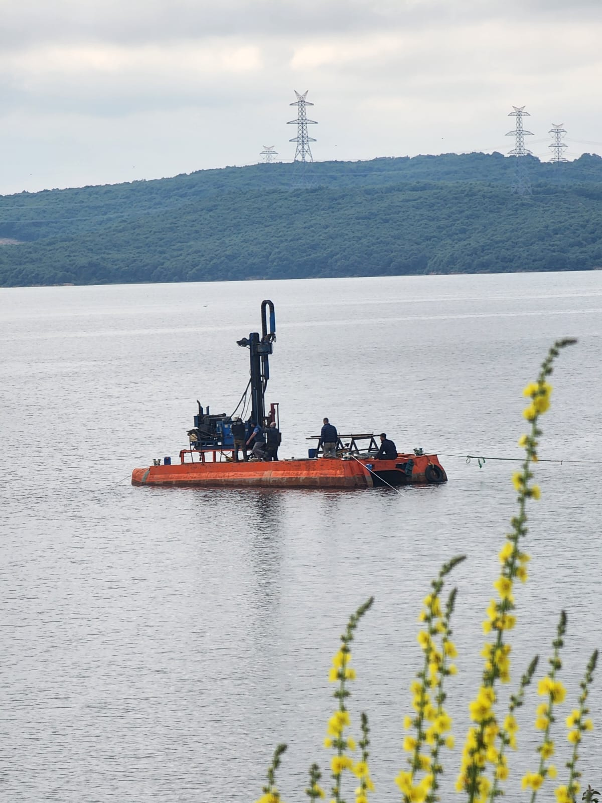
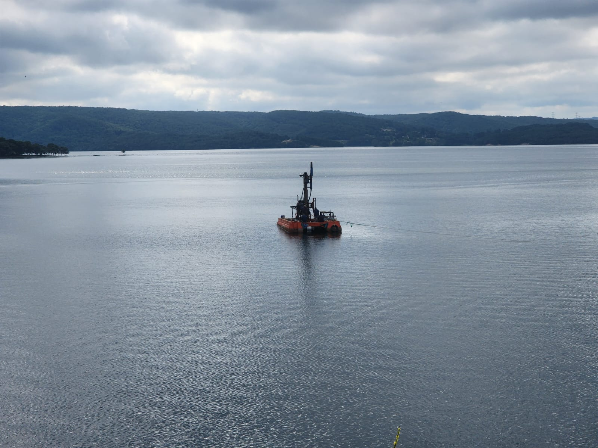

Mobil bot (tekne), hem karada hem de suda çalışabilen, çok amaçlı ve modern bir su üstü aracıdır. Amfibik yapısı sayesinde göl, nehir, bataklık ve kıyı alanlarında kolayca hareket edebilir. Özellikle su bitkisi biçme, göl temizliği, bataklık çalışmaları, taşımacılık ve acil müdahale gibi birçok alanda kullanılır.
- Amfibik Tasarım: Hem karada hem suda hareket kabiliyeti.
- Çok Yönlü Kullanım: Su bitkisi biçme, göl temizliği, taşımacılık, acil müdahale.
- Modern Teknoloji: Hafif, dayanıklı ve düşük yakıt tüketimi.
- Tek Operatör: Kolay kullanım ve yüksek manevra kabiliyeti.
- Çevre Dostu: Hassas ekosistemlerde güvenli çalışma.
KULLANIM ALANLARI
Su Bitkisi Biçme
Göl ve nehirlerde istenmeyen su bitkilerinin hızlı ve etkili biçimi.
Göl Temizliği
Yüzeydeki atıkların ve yosunların toplanması, su kalitesinin artırılması.
Bataklık ve Kıyı Çalışmaları
Bataklık, sulak alan ve kıyı bölgelerinde güvenli ve verimli çalışma.
MODERN MOBİL BOT (TEKNE) AVANTAJLARI
- Yüksek manevra kabiliyeti ve hafif yapı
- Dayanıklı HDPE veya alüminyum gövde
- Düşük bakım maliyeti
- Çevre dostu motor seçenekleri
- Çok amaçlı ataşmanlar ile esnek kullanım
- Tek operatör ile kolay kullanım
- Hızlı taşınabilirlik ve kolay rampadan inip çıkma
- Geniş uygulama alanı: göl, nehir, bataklık, sulak alan
- Modern güvenlik ve konfor donanımları
FOTOĞRAF GALERİSİ


